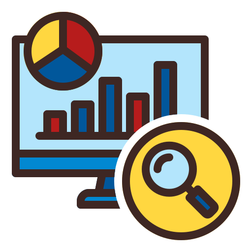
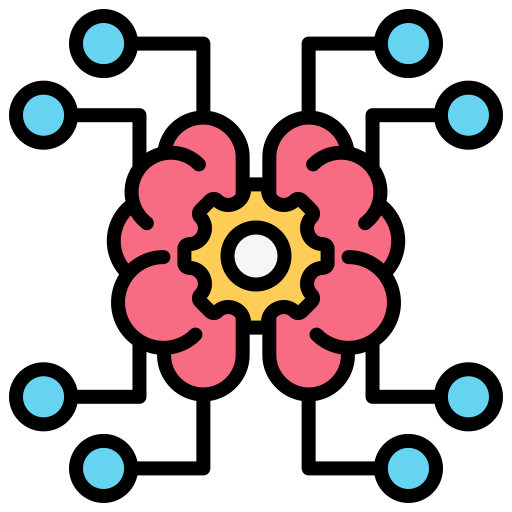
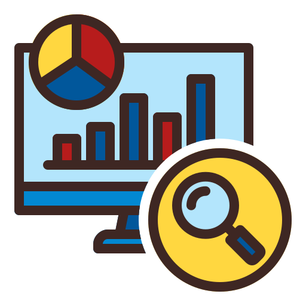
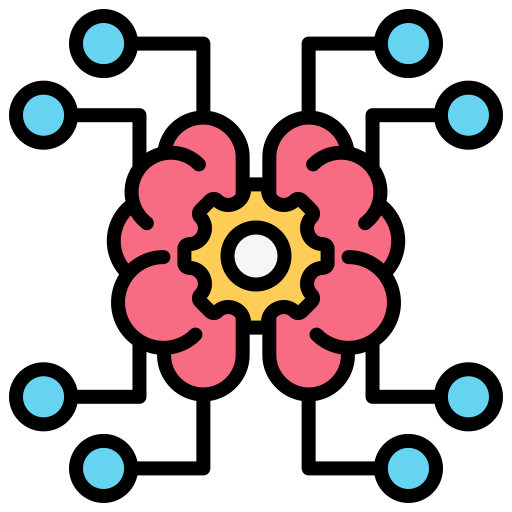

07/2024 – 09/2024
Headstarter AI
Software Engineer Fellowship
Built and deployed 5 AI projects in 5 weeks using React JS, Next.js, Firebase, Clerk, and Vercel.
Worked in a team of 3 to develop an interactive customer support agent using Next.js, integrated a custom RAG pipeline
using OpenAI and Pinecone that responds based on a company's knowledge base.
Collaborated with 3 Fellows to build and deploy a SaaS product that generates dynamic flashcards based on any topic
using the Llama 3.1 LLM, integrated a paywall and custom pricing plans.
03/2024 - present
SHAI
AI & ML Intern
Developed and implemented machine learning models using Python and libraries such as TensorFlow and scikit-learn to
solve real-world problems
Conducted data preprocessing and analysis on datasets, ensuring high data quality and relevance for model training.
Created visualizations using tools like Matplotlib and Seaborn and developed Power BI dashboards to present findings
and model performance metrics to stakeholders.
05/2024 - 08/2024
Lun Startup Studio
AI Applications and Market Analysis Training
Analyzed market trends and client needs to identify pain points, resulting in tailored AI solutions that addressed specific
business challenges.
Developed a recommendation system using collaborative filtering and content-based filtering techniques, enhancing
user experience and engagement for client applications.
Conducted thorough market analysis to evaluate the competitive landscape and inform strategic decision-making for AI
application development.
02/2024 - 05/2024
Beam Data
Web Scraping
Extracted and gathered data from a watch website using web scraping techniques, ensuring accurate and
comprehensive data collection
Analyzed collected data to identify trends, pricing patterns, and market insights, providing valuable information for
decision-making.
Visualized data using Power BI, creating interactive dashboards and reports that effectively communicated findings to
stakeholders.
Implemented data cleaning and preprocessing techniques to enhance data quality and reliability for analysis.
04/2024 - 06/2024
Freelancer
UI Designer
Created design documents to outline project specifications and requirements
Addressed and resolved client challenges through effective problem-solving strategies.
01/2023 – 12/2023
Freelancer
Freelance Programmer
Proactively identified and debugged code errors in client projects, improving functionality and performance.
Provided programming lessons
Collaborated with clients to gather requirements and develop customized software solutions that met their specific
needs.
11/2022 – 02/2023
Freelancer.com
Web Designer and UI Designer
Designed websites using Adobe XD and Figma, focusing on user experience and visual appeal.
Engaged directly with clients in meetings to educate them on UI design principles and gather project requirements.
04/2023 – 05/2023
SYNC
Web Development Intern
Designed websites using Adobe XD and Figma, focusing on user experience and visual appeal.
Engaged directly with clients in meetings to educate them on UI design principles and gather project requirements.
 


